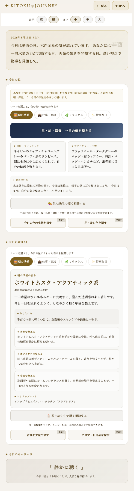
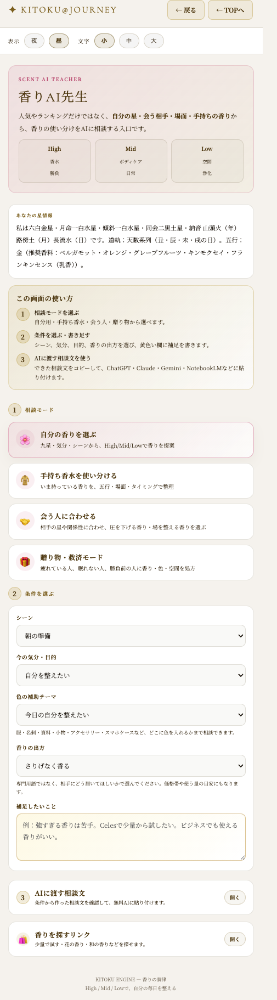

香りの使い方
KITOKUには、香りに関わる入口が2つあります。その場で提案が出る「今日の香りAI」と、AIに相談するための「香りAI先生」。役割の違いを知ると、香りはぐっと実用的になります。
その場で整える道具と、相談文を作る入口を分けて見る。
木火土金水の香りを、欲しい気分に合わせて選ぶ。
今日の自分や会う人に合わせて、香りを使い分ける。
1. 香りは、気を一番手軽に動かせる入口
方位を変えるには移動が要り、名前を変えるのは大ごとです。でも香りは、一吹きで今すぐ気分を変えられる、一番手軽な調律の道具です。
KITOKUには、香りに関わる入口が2つあります。役割が違うので、使い分けると、ぐっと実用的になります。
| 入口 | 性質 | こんな時に |
|---|---|---|
| 今日の色／今日の香りAI | その場で提案が出る | 毎朝、気分を整えたい時 |
| 香りAI先生 | AIに相談する入口 | 商談・贈り物・手持ちの整理など、深く相談したい時 |
2. 今日を整える。足りない気を、シーンに合わせて補う
毎日、方位や運気の流れは変化します。その日、自分に足りていない気を、香りと色で一時的に補うのが「今日の色」「今日の香りAI」の役割です。
今日の自分の星と、その日の星を重ねて、今日の処方星が決まります。そこから、色と香り、両方の提案が出てきます。
さらに、朝の準備／仕事・商談／リラックス／特別な日という4つのシーンを選ぶと、同じ処方の中でも提案が変わります。今日は何をする日かに合わせて選んでみてください。
| 層 | 内容 |
|---|---|
| 取り入れ方 | 手首の内側に軽くつける等、基本の使い方 |
| 香水で整える | 手首や首筋に少量。外へ出る前に |
| ボディケアで整える | 香りを強く出さず、気分を立ち上げる |
| 空間で整える | ルームフレグランス等で、場所そのものを整える |

3. 香りAI先生。4つの相談モードで、外とのつながりを整える
香りAI先生は、第15回で紹介した「自分の星情報をAIに渡して、相談相手として育てる」考え方を、香りの相談に特化させた入口です。相談モードを選ぶと、九星情報や目的に合わせた相談文を作れるので、自分に合う香りを具体的に考えやすくなります。
| モード | こんな時に |
|---|---|
| 自分の香りを選ぶ | 九星・気分・シーンから、新しい香りを提案してほしい時 |
| 手持ち香水を使い分ける | 今持っている香水を、五行・場面・タイミングで整理したい時 |
| 会う人に合わせる | 相手の星や関係性に合わせ、場を整える香りを選びたい時 |
| 贈り物・救済モード | 疲れている人・眠れない人・勝負前の人へ、香り・色・空間を処方したい時 |

4. 五行と香りの対応。やさしい早見表
5つの気には、それぞれ似合う香りの系統があります。良い・悪いではなく、今、何を引き出したいかで選んでみてください。
| 系統 | 香りの例 | 引き出したいもの |
|---|---|---|
| 木 | ユーカリ・ペパーミント・レモン | 閃き・やる気のスイッチ |
| 火 | ローズ・ジャスミン・シナモン | 華やぎ・魅力・情熱 |
| 土 | サンダルウッド・バニラ | 安定・落ち着き |
| 金 | ベルガモット・オレンジ・柑橘系 | 決断力・豊かさ |
| 水 | ラベンダー・カモミール | 休息・人間関係の潤い・直感 |
5. 相手に合わせる、という視点
気学には、相手を変えようとするのではなく、相手の気質に合わせて自分を調律する、という考え方があります。
香りも同じです。大事な商談の前に、相手の気質に近い香りをまとってみる。それだけで、無理に自分を作らなくても、場の空気が自然になじみやすくなります。
6. TPOでの使い分け例
全部を覚える必要はありません。今日はどんな自分でいたいかを一つ選ぶだけで、十分に活用できます。
| 場面 | おすすめの系統 |
|---|---|
| 商談・プレゼン | 金（決断力・信頼感） |
| デート・大切な人との時間 | 火（華やぎ・魅力） |
| 家族との落ち着いた時間 | 土（安定・安らぎ） |
| 新しい挑戦の前 | 木（閃き・やる気） |
| 疲れた日の夜 | 水（休息・回復） |
7. 一吹きから、今日を少し変えてみる
今日の自分を整えるのも、誰かとの時間を大切にするのも、どちらもあなたが選べることです。
香りは、見えない気分を扱うための小さな道具です。忙しい朝も、大事な商談の前も、疲れた夜も、一吹きで「どう在りたいか」を思い出せます。
一吹きから、今日を少し変えてみてください。